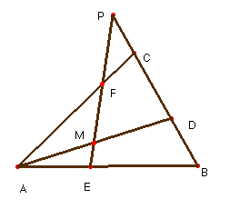

Problema 107.- En el triángulo ABC, sean: D un punto de BC, E de AB, F de AC y M de AD. Si M es de EF, es: DC (EB/EA) + BD (FC/FA) = BC (MD/MA)

Bellot, F (1996): El teorema de las transversales y algunas consecuencias. Conferencia pronunciada durante la VIII olimpiada nacional de Costa Rica, San Carlos.Solución de Saturnino Campo Ruiz, profesor de Matemáticas del I.E.S. Fray Luis de León (Salamanca) (24 de julio de 2003)
Es aplicación reiterada del teorema de Menelao.
Aplicándolo en el triángulo ABC para la transversal FE obtenemos: , de donde .
En el triángulo ADB y para la misma transversal, se obtiene, , de donde podemos despejar . Si sustituimos y en la relación del enunciado y sacamos factor común , la veracidad de aquélla equivale a la de la siguiente: DC +BD· = BC· . (*)
Dividiendo por DC, el primer miembro de esta relación es 1 + = 1 – (PDCB).
El segundo miembro se transforma en = (BDCP). De las propiedades de la razón doble de cuatro puntos alineados se sigue que (BDCP) = (PCDB) = 1— (PDCB), con lo cual queda probada la igualdad (*) y concluimos.